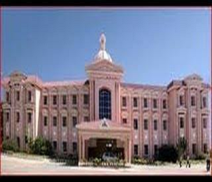
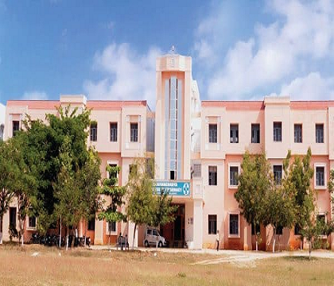

WELCOME TO ACADEMICS
The process of globalization renders great responsibility on the academic institutions to
continuously update and re-design their curricula in
every field to equip students to cope
with the changing needs of the society.Tremendous developments and inventions in the industry,
research and development are taking place at rapid pace.To meet these challenges Annamacharya
Institute of Technology &
Sciences (AITS),an Autonomous Institute under Jawaharlal Nehru
Technological University Anantapur,
Anantapuramu and University Grants Commission (UGC)
revising its curricula continuously.

ENGINEERING CAMPUS
B.Tech & M.Tech

PHARMACY CAMPUS
B.Pharmacy & M.Pharmacy

MBA CAMPUS
MBA & MCA
Artificial Intelligent